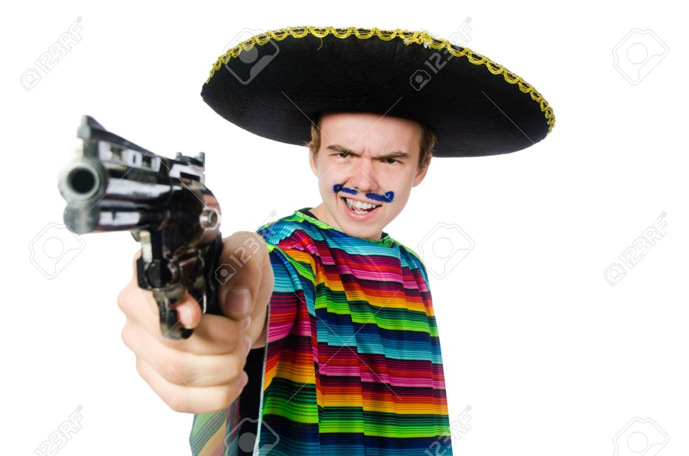
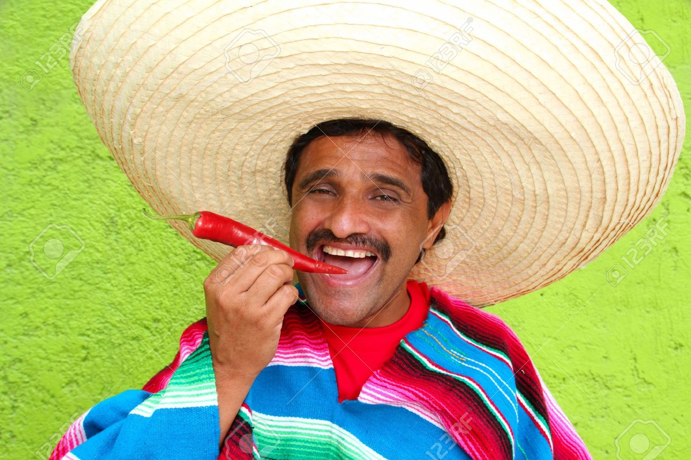

About Our Pizza
~Miguel De Leon

~Juan De Leon
Miguel De Leon was born in Leon province, Spain and from an early age began traveling the provinces seeking the finest in culinary traditions. Something he could not explain led him to leave his homeland of Leon, and he settled in the city of Leon, Mexico. While in Mexico Miguel met with the Mexican branch of the De Leon family and for the first time met Juan De Leon, an expert in Italian cuisine. Together with Juan, Miguel fused the legendary culinary traditions of Mexico, Spain and Italy into a pizza masterpiece that he called the Leon Pizza. And Leon Pizzeria was born.